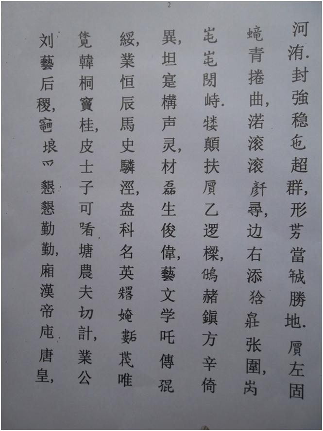
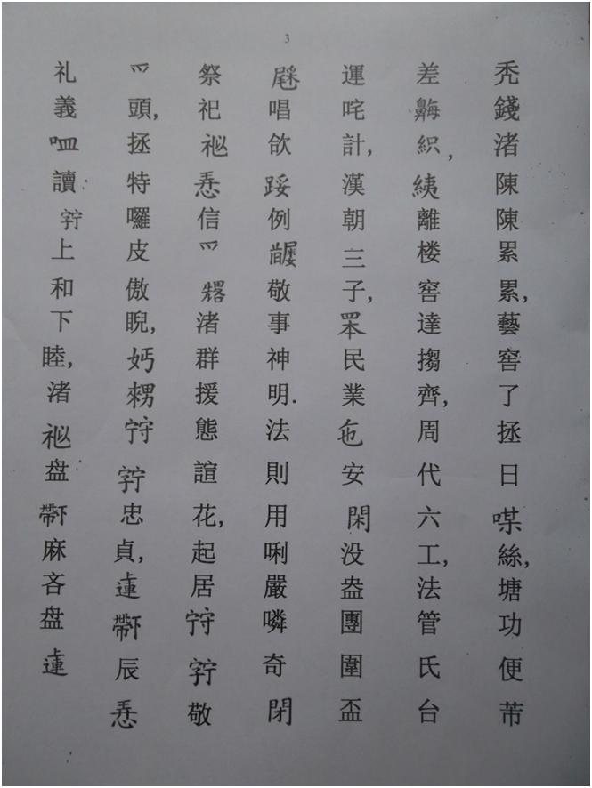
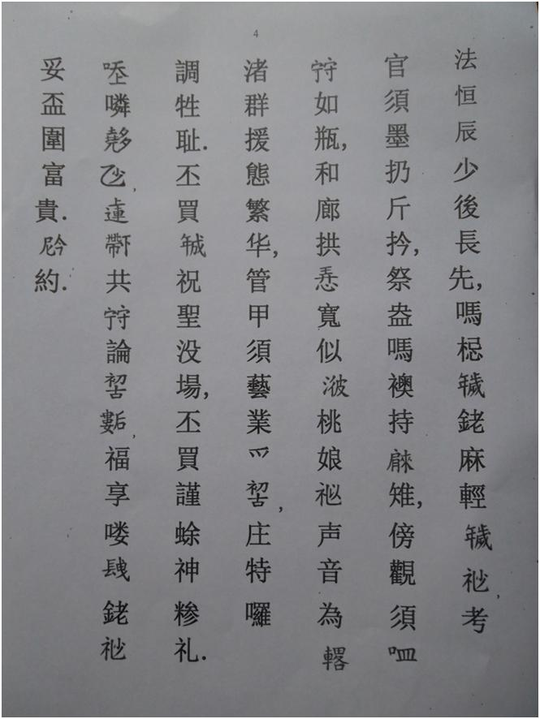

Chương 4 (3)
(Đọc mỗi trang từ phải sang trái và từ trên xuống dưới )




BẢN DỊCH VÀ PHIÊN ÂM HÁN - VIỆT
BẢN XÃ MỤC LỤC
Hoàng Thạng vạn vạn niên (7), Thánh Chúa vạn vạn tuế. Vua tôi mừng hội hợp long vân, Trên dưới thoả duyên lành ngư thuỷ. Bể trầm tăm ngạc, sân hạ vầy, ngọc bạch rẫy tuôn, Rừng tắt khói lan, kho Chu thấy, can qua xếp để, Dân Nghiêu Thuấn xem tầy, Thói Đường Ngu khá ví. Gió êm mưa giặt, muôn dân điều phúc hưởng thái bình, Nhà đủ người no, tám cõi khắp ca dâng Thạng Thuỵ (7).
°°°
Mừng nay giữa huyện Đông Ngàn, Đội Một xã trong Hà Vỹ, Phong cương ổn đã xiêu quần, Hình thế đương nên thắng địa, Mái tả có rồng xanh cuốn khúc, nước cuồn cuộn nghìn tầm, Biên hữu thêm hùm trắng trương vây, núi đùn đùn muôn trĩ, Trâu đen phù mái ất lạ nhường, Sẻ đỏ trấn phương Tân ỷ dị, Đất thực cấu thanh linh, Tài giỏi sinh tuấn vỹ. Nghề văn học cha truyền con nối,
Nghiệp hằng thìn mã sử lân kinh. Đám khoa danh anh trước em sau,
Đời rõi thấy Hàn, Đồng, Đậu quế. Bề sĩ tử khá khen, Đường nông phu siết kể, Nghiệp công lưu, nghề hậu tắc,
ruộng nương làm khẩn khẩn cần cần,
Sương Hán Đế, đụn Đường Hoàng,
thóc tiền chứa trần trần luỹ luỹ. Nghề khéo léo chẳng nhặt mỏ tơ, Đường công tiện nào sai mũi chỉ. Dây Li Lâu khéo đặt so tày, Chu Đại Lục Công. Phép quản thị xoay vần xá kể, Hán Triều tam tỷ (tử). Bốn dân nghiệp đã an nhàn, Một đám đoàn vầy vui vẻ. Xướng ca noi lề cũ, kính sự thần minh, Phép tắc dùng nhời nghiêm khuyên răn cả bé. Tế tự lấy lòng tin làm trước, chớ còn vin thói huyên hoa, Khởi cư giữ chữ kính làm đầu, chẳng được ra bề ngạo nghễ. Gái trai giữ chữ trung trinh, Trên dưới thời lòng lễ nghĩa. Miệng đọc chữ “Thạng hoà hạ mục” (7),
Chớ lấy bàn dưới mà lấn bàn trên, Phép hằng thời thiếu, hậu trường tiên,
Chớ cậy tuổi già mà khinh tuổi trẻ. Khảo quan tu mực nẩy cân cầm,
Tế đám chớ áo chày vai trễ. Khảo quan tu miệng giữ như bình,
Hoà làng cùng lòng khoan tựa bể,
Đào nương lấy thanh âm làm trước,
Chớ còn theo thói phồn hoa, Quản giáp tu nghề nghiệp làm xưa,
Chẳng được ra bề sống xỉ. Vậy mới nên chúc Thánh một trường, Vậy mới cẩn thờ Thần tám lễ, Nhời răn nhiều ít, trên dưới cùng giữ trọn xưa sau. Phúc hưởng dài lâu, già trẻ thoả vui vầy phú quí. Nay ước!
2.3. Văn hoá giáo dục
2.3.1. Nho học
Nho học được truyền bá vào nước ta rất sớm, mạnh nhất là thời Sĩ Nhiếp (187-226). Làng Hà Vỹ thuộc huyện Đông Ngàn, xứ Kinh Bắc (một thời gian gần 700 năm) là nơi có “một đống ông Đồ, một bồ Tiến sĩ, một bị Trạng nguyên, một thuyền Bảng nhãn”. Truyền thống hiếu học, khoa bảng đó thế nào cũng có tác động đến việc học tập của con em Hà Vỹ. Trong các khoa thi thời Phong kiến, Hà Vỹ cũng có những vị đỗ Thám hoa như Đỗ Túc Khiêm, Hoàng Giáp như Ngô Tòng Củ, Tiến sĩ như Đỗ Túc Khang, Nguyễn Trác... Đặc biệt theo giả phả họ Đỗ Đại tôn thôn Giao Tác có gia đình cụ Đỗ Hoan (con của Đỗ Tử Lỗi ) đã sinh được năm người con trai thì bốn con đều đỗ Đại khoa một con là “Phục tướng quân” dưới thời hậu Lê, đó là:
1. Đỗ Túc Khang (con trưởng) đỗ Tam giáp đồng Tiến sĩ năm Bính Thìn (1496) thường gọi là Nghè Rào, làm quan đến chức Thừa chính sứ (có khắc tên trên bia Tiến sĩ ở Văn miếu Quốc Tử Giám Hà Nội)
2. Đỗ Viên Nghị (con thứ 2) là một vị tướng nhà Lê, được Vua phong tước là “ Phục tướng quân bắc quản đô đốc, chánh quản thần vũ vệ xuyên đình quang hầu” hiện nay con cháu cụ ở Bồng Sơn, Vĩnh Lộc, Thanh Hoá (quê gốc của cụ nội Đỗ Chấn)
3. Đỗ Đại Uyên con thứ 3 đỗ Tiến sĩ năm Kỷ Mùi (1499) thường gọi là Nghè Me (cụ sinh và lớn lên đi học ở Giao Tác (Quậy Rào) nhưng khi đỗ Tiến sĩ lại về vinh qui ở quê vợ - làng Me thuộc xã Hương Mạc, huyện Từ Sơn, tỉnh Bắc Ninh)
4. Đỗ Túc Khiêm con thứ 4 đỗ Thám Hoa (trên Tiến sĩ) năm Kỷ Mùi (1499 đỗ cùng năm với Đỗ Đại Uyên) cụ sinh và lớn lên đi học ở Giao Tác nhưng khi đỗ Tiến sĩ lại về vinh qui ở Thư Trì, Thái Bình, hiện nay con cháu cụ sinh sống ở Mỹ Đình, Phú Mỹ, Từ Liêm, Hà Nội
5. Đỗ Danh (Đỗ Vinh) - con thứ 5 - đỗ Tiến sĩ năm Mậu Thìn (1508) làm quan Thượng Thư đời Lê, cụ sinh trưởng và đi học ở Giao Tác nhưng khi đỗ Tiến sĩ lại về vinh qui ở Thư trì Thái Bình hiện nay con cháu của cụ ở làng Tức Mạc xã Lộc Vượng, Nam Định.
Trong bản Mục Lục ở đình làng có những câu:
“Bề văn học cha truyền con nối Nghiệp hằng thìn mã sử lân kinh Đám khoa danh anh trước em sau Đời dõi thấy Hàn, Đồng, Đậu, quế ”
Để ca ngợi gia đình cụ Đỗ Hoan có thể sánh với mấy gia đình họ Đậu, họ Đồng và họ Hàn bên Trung Quốc (ba gia đình này cũng có 5 con trai đỗ Tiến sĩ)
Ở nhà thờ họ Đỗ Đại tôn (nhà ông Đỗ Văn Nghiệp thôn Giao Tác) có câu đối còn ghi: “Thời Trung đại cửu tử bát đồng triều” nghĩa là thời Trung đại họ Đỗ có gia đình sinh được chín người con trai thì có tới tám người con đỗ đạt được ra làm quan cùng một triều đại (đó là con của Giám sinh Đỗ Túc Độ )
Khi đạo Nho thịnh hành ở nước ta, nhà Vua dựng Văn miếu thì các địa phương cũng xây Văn chỉ để thờ Đức Khổng Tử, các nho sinh của Hà Vỹ cũng xây Văn chỉ ngay ở cạnh đình để thờ đức Khổng Tử và ghi tên những người đỗ đạt của làng. (Văn chỉ xưa đặt ở cạnh sân trường Mẫu giáo thôn Đại Vỹ ngày nay). Trong suốt chặng đường 843 năm cử nghiệp Hán học, Hà Vỹ có 84 người đã đỗ từ Tú tài đến Thám hoa trong đó có 1 Thám hoa và 5 Tiến sĩ đó là không kể Tiến sĩ Ngô Chấp Chung quê gốc ở Đại Vỹ, trú quán ở Hà Lỗ, Tiến sĩ Đồng Nhân Phái sinh ở Thiết Úng là con nuôi cụ Đỗ Túc Khang được bố nuôi cho ăn học ở Giao Tác
2.3.2. Đạo Phật
Đạo Phật thâm nhập vào vùng Kinh Bắc từ thế kỷ thứ VI. Đạo Phật có hai dòng: Dòng Nam Phương và dòng Quan Bích. Chùa Quậy theo dòng Quan Bích. Dòng này do Vô Ngôn Thông Thiền sư đưa vào chùa Kiến sơ (Phù Đổng) đầu thế kỷ thứ IX được nhà sư Cẩm Thành quê ở Tiên Du trụ trì, tại đây tiếp nhận. Hai dòng thiền Nam Phương và Quan Bích là cơ sở chủ yếu của Phật giáo nước ta, sau này góp phần đào tạo nhiều cao tăng danh tiếng
Ở triều Lý, Trần, đạo Phật rất thịnh hành. Chùa chiền phần lớn do vua quan quý tộc lập ra, chùa nào cũng rất đông tăng ni phật tử. Chùa Trùng Quang ở Tiên Du học trò có tới hàng ngàn người. ở triều Lý, Trần, Phật giáo chính là Quốc giáo của nước Đại Việt. Vua Lý Thánh Tông và Trần Nhân Tông là hai vị Vua rất mộ đạo Phật, các vị đã từ bỏ ngai vàng nơi giầu sang phú quí để đi tu. Chính Lý Thánh Tông là người sáng lập ra dòng Thảo Đường (dòng thứ ba của đạo Phật Việt Nam) còn Trần Nhân Tông là vị Thuỷ tổ của phái Thiền Trúc Lâm Yên Tử. ở vùng Kinh Bắc thời Lý, Trần, chùa chiền xây dựng khắp nơi, hầu như làng nào cũng có chùa, nhiều người đi tu đắc đạo am tường đạo Phật.
Theo Gia phả họ Phạm Quí Công (Phạm Xuân) ở thôn Châu Phong có cụ Phạm Quí Công (tôn là Tổ họ) hiệu Phúc Khê là người đạt tới đỉnh cao của đạo Phật được Nhà Vua phong tước là Tả Quốc sư Ngự Sử Đài, Thái bảo yến Quận Công, khi về hưu được Vua ban là Vinh lộc Đại trượng phu, mộ ngài vẫn còn ở nhà thờ họ Phạm mới xây ở Châu Phong. Năm 2004 mộ cụ Phạm Quí Công được con cháu họ Phạm xây lại và khắc bia cùng với nhà thờ mới. Đến đầu thế kỷ thứ XIX hậu duệ của cụ Phạm Quí Công (khoảng đời thứ 19) chính là Phạm Quí Dận (thường gọi là Sư Lã), cụ đã đứng ra tổ chức xây chùa Chốn tổ Đại Bi ở đồng Rùa (đầu thôn Đại Vỹ) và chính cụ Sư Lã cũng đã chủ trì xây dựng lại đình làng Hà Vỹ năm Canh Tý 1900 đến nay vẫn còn và được Bộ Văn hoá nước Cộng hoà Xã hội Chủ nghĩa Việt Nam công nhận là Di tích Lịch sử - Văn hoá
2.3.3 Văn học dân gian.
Trong suốt quá trình lịch sử, trải qua hàng ngàn năm, từ trang Hà Hào đến làng Hà Vỹ đời nối đời, con người vẫn tồn tại và phát triển cho tới ngày nay. Cũng như các làng quê khác, người dân Hà Hào - Hã Vỹ trong khi lao động sản xuất vui chơi họ đã “sáng tác” được nhiều câu ca dao hò vè, ví von còn truyền lại mà nhiều người có tuổi bây giờ vẫn thuộc
Để nêu đặc điểm của từng cánh đồng, từng khu vực đã xuất hiện các câu như “Cua bờ Cái, gái bên Sau” (để chỉ cua bờ Cái béo, gái bên Sau - Châu Phong - đẹp) “Cau bên Rào, ao bên Quậy”…hoặc “một mẫu đồng Rào không bằng một sào đồng Quậy” “Mạ đồng Tróc, thóc đồng Kênh” v.v
Để chỉ những người có nhiều tiền, nhiều ruộng, hay làm, ở Giao Tác còn truyền lại câu “ Lắm tiền cụ Vượng, lắm ruộng cụ Hàm, hay làm cụ Mật (cụ Cót)…”
Chợ Sa ở Cổ Loa họp vào ngày mồng Sáu hàng tháng, là chợ của “quê cha đất tổ” không được bỏ chợ Sa, các cụ thường truyền lại câu:
“Về nhà bảo con bảo cháu Chớ bỏ mồng Sáu chợ Sa”
Làng Quậy có nghề thợ mộc, con trai làng lại có tay nghề rất khéo, cô nào lấy được chồng biết làm nghề thợ mộc giỏi thường rất hài lòng mãn nguyện, họ biểu lộ niềm vui bằng các câu:
Lấy chồng thợ mộc sướng sao, Mạt cưa rấm lửa phon bào nấu cơm, Phon bào lại nỏ hơn rơm, Mạt cưa rấm lửa thơm hơn hương trầm.
Hình ảnh các chàng trai thợ mộc ở làng Quậy khi đi làm thợ nơi xa thường phải vác đục xách bào cũng là mơ ước của bao cô gái các làng lân cận, họ muốn làm quen:
Hỡi anh làm thợ nơi nao, Để em vác đục xách bào tiễn đưa.
Giao Tác có nghề thợ mộc giỏi thường dễ lấy vợ đẹp, nên con gái Châu Phong hay lấy chồng Giao Tác, vì vậy các chàng trai Châu Phong đã “sáng tác” các câu:
Nước giếng Châu Phong vừa trong vừa mát, Đường Châu Phong lắm cát dễ đi, Ai về Giao Tác làm chi, Nước giếng thì đục đường đi thì lầy.
Để nhắn nhủ các cô gái Châu Phong “đừng có dại” lấy chồng Giao Tác
Thợ nề ở Hà Vỹ cũng rất khéo tay lại hết lòng vì tình
yêu đôi lứa, để được yêu, có lẽ họ đã sáng tác ra các câu
hứa hẹn sau đây:
…Ước gì anh lấy được nàng, Để anh mua gạch Bát Tràng về xây, Xây dọc anh lại xây ngang, Xây hồ bán nguyệt cho nàng rửa chân …
Gạch Bát Tràng nổi tiếng khi xưa cũng ở Đông Ngàn chẳng xa làng ta là mấy, vì tình yêu, anh thợ nề làng Quậy chắc là mua được, vì làm nghề thợ nề lại khéo tay nên anh có thể “xây dọc” “xây ngang” “xây hồ bán nguyệt” rất dễ dàng chứ đi thuê thì phiền mà tốn lắm.
Tuy nhiên ở Hà Vỹ ngoài thợ mộc, thợ nề, còn có cả thợ lò nhưng thợ nề thợ lò vất vả, khi làm lại bẩn hơn, vì vậy có những câu chê các cô gái lấy chồng thợ nề, thợ lò như:
Vô duyên lấy phải thợ nề, Chỗ ăn chỗ ở như dê nó nằm,
hoặc:
Vô duyên lấy phải thợ lò,
Vầy đất, vầy cát, vầy tro cả ngày v.v.
Vì Hà Vỹ ở vùng đất khoa bảng “Dốt Đông Ngàn còn hơn sang (ngoan) nơi khác” nên số người theo học chữ Nho (Hán- Nôm) cũng nhiều, trong đó cũng có người đỗ đạt rất cao được Triều đình trọng dụng. Hẳn hình ảnh “vinh qui bái tổ” của các vị Tiến sĩ, ông Nghè ngày xưa đã gây ấn tượng mơ ước của bao cô gái trong làng muốn lấy chồng theo học chữ Nho để sau này chồng được vinh hiển làm quan, mình cũng được “võng anh đi trước, võng nàng theo sau” mà không muốn lấy những anh chồng nhà giầu nhưng vô học, nên có những câu:
Chẳng tham ruộng cả ao liền, Tham vì cái bút cái nghiên ông Đồ.
Lấy chồng rồi, người vợ trẻ còn “sáng tác” ra những câu ca dao để phê phán chê bai những anh chàng không chịu “dùi mài kinh sử” chỉ thích giong chơi, học chỉ là hình thức như:
Ngày thì cắp sách đi giong
Tối về lại thắp đèn trong đèn ngoài.
Quan niệm của các cô vợ ngày xưa đã đi học thì phải siêng năng, chăm chỉ để học giỏi thành tài như thế mới có tương lai, còn không thì nên về đi cày làm ruộng để có cái nghề trong tay còn hơn:
Văn chương phú lục chẳng hay Trở về làng cũ học cày cho xong v.v.
Hà Vỹ trước đây thuộc tỉnh Bắc Ninh là quê hương quan họ nên ít nhiều cũng ảnh hưởng những lời ca tiếng hát của quan họ Bắc Ninh. Dưới thời phong kiến, vào những đêm gió mát trăng thanh, mùa thu tháng 8, nhân khi nhàn rỗi (do lúa đang lên đòng) trai gái thường tụ tập tổ chức hát ví hoặc hát trống quân giữa ngõ này với ngõ khác, giữa làng này với làng khác rất vui, trong bài hát có những câu mang dáng rấp của làn quan họ Bắc Ninh như là:
Còn duyên yếm thắm dải đào, Hết duyên yếm rách dải nào cũng vơ, Còn duyên kén những trai tơ, Hết duyên ông lão cũng vơ làm chồng…
Trên đây chỉ là một số câu được các cụ truyền lại mà tôi biết, nếu chịu khó sưu tầm chắc còn phong phú hơn nhiều.
Chú thích:
(1) Trước khi xây đình, dân làng Quậy đã làm một cái miếu (hoặc đền) để thờ ba vị Thánh của làng và gọi là miếu (hoặc đền) thờ Thành Hoàng để che mắt bọn xâm lược Phương Bắc phá huỷ vì ba vị Thành Hoàng đó đều là ba vị tướng của hai bà Trưng đánh quân xâm lược (2) Đình hiện nay xây dựng năm Canh Tý (1900) do Pháp sư Phạm Quí Dận (Sư Lã) người họ Phạm Quí Công (Phạm Xuân) thôn Châu Phong chủ trì xây dựng (làm sau chùa Chốn tổ Đại Bi - chùa cũ nay không còn) (3)Theo Thần tích ở đình Hà Vỹ (làm năm Vĩnh Hựu thứ 6 -1740) do cụ Đỗ Duy Lục thôn Giao Tác dịch tử bản chữ Hán (4)Thờ vọng là: Dùng một nồi hương mới rồi lấy một ít cát và chân hương ở nồi hương của đình mang về nghè thờ. Ngày Lễ Hội (12 tháng Giêng) Châu Phong đưa nồi hương đó lên kiệu, rồi rước sang đình, hết Lễ Hội lại rước về nghè (vọng nghiã là hướng về)
(5)(6)Theo Hương ước xã Hà Vỹ làm năm Thành Thái thứ 19 -1907
(7) Nguyên văn là chữ “Thượng” nhưng đọc là “Thạng” để tránh đọc tên húy là Đoàn Thượng sinh ra Thánh Đông Hải.